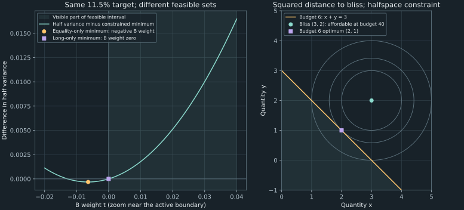

20. Inequality constraints and optimality certificates
At an 11.5% target, Chapter 19's unrestricted optimizer sells a small amount of asset B short. A fund that forbids short positions needs a different answer: weights $(0.25,0,0.75)$, with variance 2.125. The task is to prove that this boundary portfolio is optimal, identify the cost of its restriction, and compute it without pretending that every inequality must hold as an equality.
Source spine: recording 57 on shorting and constrained portfolios, the complete optimization tutorials 59, 60, and 61, Sara's no-short worked problem in 63, plus the no-short and log-barrier portions of paired labs 64 and 65. The chapter reorganizes the tutorials before the portfolio certificate so the necessary concepts appear before use. Proofs, numerical diagnostics, and the specialized public implementation are original elaborations.
20.1 Change the feasible set before changing the algorithm Recording 57, 0:16
In the idealized short-sale transaction, an investor borrows a share, sells it, later buys a replacement, and returns that replacement to the lender. Ignoring fees and intervening distributions, selling at price $S_0$ and replacing at $S_1$ gives gain $S_0-S_1$. A rising price therefore creates a loss. A short position is a liability to return the security; collateral does not turn that liability into a bounded loss. Real borrow charges, collateral rules, financing, and availability require their own model.
A negative portfolio weight represents that short exposure in the linear return calculation. If the initial wealth unit is one and weights sum to one, a total negative weight of $-q$ supports total positive weight $1+q$. This is the simplified financing arithmetic behind a leveraged long-short allocation. It does not establish that adding shorts always increases an optimized variance. The comparison must specify which target and which feasible set remain fixed.
Keep the one-period simple-return vector $\mu=(0.10,0.08,0.12)^T$ and the recovered teaching covariance
\[ \Sigma=\begin{pmatrix}4&1&0.5\\1&2&0.3\\0.5&0.3&3\end{pmatrix}. \]As in Chapter 19, these are literal numerical covariance entries in the declared squared-return convention, not an observed market covariance or an implicit percentage-point conversion. Let $w\in\mathbb R^3$ denote risky amounts relative to initial wealth, let $\mathbf1$ be the vector of ones, and let $m$ be the target expected simple return. The new problem is
\[ \min_w f(w)=\frac12w^T\Sigma w,\qquad \mu^Tw=m,\quad\mathbf1^Tw=1,\quad w_i\geq0\quad(i=1,2,3). \tag{20.1} \]The inequalities are a modeling decision. A mandate could instead limit individual positions above and below or cap the sum of weights in a sector; these are also linear constraints. Actual restrictions vary by institution and jurisdiction, so we do not turn the lecture's institutional examples into a universal regulatory rule. Its discussion of price discovery and financial crises motivates why shorting can be debated; it supplies no empirical proof that short sales always cause or prevent a crash.
With nonnegative weights summing to one, $\mu^Tw$ is a convex combination of the asset means. Thus (20.1) is feasible exactly when $0.08\leq m\leq0.12$: necessity follows from the minimum and maximum mean, and sufficiency follows by mixing the minimum- and maximum-mean assets. At a 12% target, the unrestricted minimum uses a negative B weight, but the long-only problem is still feasible by putting everything in asset C. An inadmissible unrestricted optimum is different from an infeasible target.
At the fixed target $m=0.115$, the equality-only solution is approximately $(0.262820513,-0.006410256,0.743589744)$ and variance 2.124358974359. The long-only feasible set is a subset of the equality-only set. Its minimum variance can therefore stay the same or increase, and cannot decrease. We will derive the boundary solution and its variance 2.125, rather than clipping a weight and hoping the target remains satisfied.
20.2 Ask whether an optimum exists before solving a derivative equation Recording 59, 0:15
An optimization problem consists of an objective function $f:S\to\mathbb R$ and a feasible set $S$ of allowed choices. A maximizer $x_*$ satisfies $f(x_*)\geq f(x)$ for every $x\in S$; a minimizer reverses the inequality. A local maximizer only needs that comparison in some neighborhood of $x_*$. An objective can have a finite supremum, meaning its least upper bound, without any feasible point attaining it.
For $f(x)=x$ on $S=\mathbb R$, there is no finite maximum: replacing any candidate $x$ by $x+1$ improves it. Restricting to $S=(0,1)$ bounds the objective but still gives no maximizer. Every candidate $x$ is beaten by $(x+1)/2$, which remains feasible. The supremum is one, and one is excluded. On $S=[0,1]$, by contrast, the maximum is attained at $x=1$.
A useful existence theorem is the finite-dimensional extreme-value, or Weierstrass, theorem: a continuous real function on a nonempty compact set attains a maximum and a minimum. For subsets of $\mathbb R^d$, compactness is equivalent to being closed and bounded. The role of these conditions can be seen from sequences. Compactness supplies a convergent subsequence of feasible candidates, whose limit stays in the set; continuity makes the corresponding objective values converge to the value at that feasible limit. Applying this to candidates approaching the supremum gives a maximizer. Boundedness of the objective itself follows by the same argument: an unbounded sequence of values would contradict continuity at a convergent subsequence's limit.
These conditions are sufficient, not necessary. For example, a positive-definite quadratic on all of $\mathbb R^d$ has a minimum despite the unbounded feasible set. Such a quadratic is coercive: its value goes to positive infinity as the norm of the choice vector goes to infinity. In the long-only portfolio problem, the feasible set is a closed subset of the simplex $\{w:w\geq0,\mathbf1^Tw=1\}$, which is bounded. Whenever the target is feasible, continuity gives existence. Strict convexity of our covariance quadratic gives uniqueness, as the certificate below will also show.
Now distinguish existence from a calculus test. At a differentiable interior local extremum, the gradient must vanish. If it did not, moving a small distance along the gradient would increase the function, and moving against it would decrease it; both directions are feasible in an interior open ball. This argument fails at a boundary. The maximum of $f(x)=x$ on $[0,1]$ is at one even though $f'(1)=1$: the improving direction points outside the feasible set.
Conversely, a zero derivative supplies a candidate, not a verdict. For $f(x)=10x-x^2=25-(x-5)^2$, the derivative $10-2x$ vanishes at five, and the completed square proves the unique global maximum value 25. For $f(x)=x^3$, the derivative also vanishes at zero, but the function increases through it and has no local extremum there. Numerical software cannot repair this logical distinction by simply returning a root of the gradient.
20.3 Check curvature in directions that can actually be taken Recording 59, 17:24
For a twice continuously differentiable function near a point $x_*\in\mathbb R^d$, let $H=\nabla^2f(x_*)$ be its symmetric Hessian matrix. A Taylor expansion in the displacement $h$ gives
\[ f(x_*+h)=f(x_*)+\nabla f(x_*)^Th+\frac12h^THh+o(\|h\|^2). \]The last term is small relative to $\|h\|^2$ as $h\to0$. At a stationary point, the linear term vanishes. If $H$ is negative definite, the quadratic term is strictly negative in every nonzero direction, uniformly bounded away from zero on the unit sphere; sufficiently small displacements therefore lower $f$. This proves a strict local maximum. Positive definiteness similarly proves a strict local minimum. At an interior local maximum the Hessian must be negative semidefinite, since the second derivative along each line cannot be positive there. That necessary condition is weaker than the sufficient one.
A zero curvature direction needs more analysis. Both $f(x)=x^4$ and $f(x)=-x^4$ have first and second derivatives zero at the origin, but one has a strict minimum and the other a strict maximum. The earlier $x^3$ example has neither. Thus a zero second derivative does not diagnose an inflection point by itself.
For two variables, write
\[ H=\begin{pmatrix}f_{xx}&f_{xy}\\f_{xy}&f_{yy}\end{pmatrix},\qquad D=f_{xx}f_{yy}-f_{xy}^2. \]At a stationary point, $D>0$ and $f_{xx}<0$ make $H$ negative definite, hence a strict local maximum; $D>0$ and $f_{xx}>0$ make it positive definite, hence a strict local minimum. If $D<0$, the eigenvalues have opposite signs, giving a saddle: directions exist along which the function increases and others along which it decreases. The case $D=0$ is inconclusive. These are two-dimensional tests, not a determinant-only rule for arbitrary dimension. In more dimensions, definiteness concerns all eigenvalues or an equivalent full definiteness criterion.
The tutorial's example $f(x,y)=-(x-3)^2-(y-2)^2$ has gradient zero at $(3,2)$, Hessian $-2I_2$, and determinant four. The Hessian test proves a strict local maximum. The explicit formula proves more: $f\leq0$ everywhere with equality only there, so this is the unique global maximum. More generally, a differentiable concave function on a convex domain lies below each of its tangent planes. A zero-gradient point is then a global maximum. The global domain/concavity assumption is doing additional work beyond a Hessian check at one point.
Constraints change the relevant directions. With affine equalities $A_{\rm eq}x=b_{\rm eq}$, a feasible displacement satisfies $A_{\rm eq}h=0$. For a quadratic, the Taylor expansion is exact, so curvature only on this null space is needed in the comparison. Chapter 19 used precisely that fact. A full-space indefinite Hessian can still have positive curvature in every nonzero feasible direction.
For nonlinear equality constraints, the second-order analysis also involves the curvature of the constraints through the Hessian of the Lagrangian, together with regularity assumptions. A bordered Hessian collects constraint gradients and that Hessian into one matrix, but its determinant has no universal single-sign interpretation across different numbers of constraints. We do not use an unqualified bordered-determinant shortcut. For the affine, convex portfolio problems here, the direct feasible-portfolio inequality below gives a global certificate and is simpler than a general constrained second-order test.
20.4 Derive a shadow price in a complete consumer problem Recording 60, 0:15
The equality tutorial supplies a useful contrast with a portfolio target. Let $x_i>0$ denote quantities of three goods measured relative to fixed reference units, so each $x_i$ is dimensionless. Let their prices be $p_i>0$ in currency per reference unit and let available income be $M>0$ in the same currency. Consider dimensionless utility
\[ u(x)=\frac12\sum_{i=1}^3\log x_i,\qquad \sum_{i=1}^3p_ix_i\leq M. \]Utility is strictly increasing in each quantity. If any feasible positive bundle leaves money unspent, buying a little more of one good improves utility while staying feasible. Therefore the budget binds at an optimum. This conclusion uses monotonicity and the absence of an additional purchase cap; it is not a general rule that every inequality can be replaced by an equality.
Write the maximization Lagrangian as $L_u=u(x)+\lambda_u(M-p^Tx)$, with consumer-budget multiplier $\lambda_u$. After the binding-budget argument, the stationarity and feasibility equations are
\[ \frac{1}{2x_i}-\lambda_u p_i=0,\quad i=1,2,3,\qquad \sum_i p_ix_i=M. \]They imply $p_ix_i=1/(2\lambda_u)$ for every good, hence $M=3/(2\lambda_u)$ and
\[ \lambda_u^*=\frac{3}{2M},\qquad x_i^*=\frac{M}{3p_i}. \tag{20.2} \]For prices $(5,6,10)$ and income 180, the bundle is $(12,10,6)$ and each good accounts for expenditure 60. The multiplier is $1/120=0.008333333333$ per currency unit, not $1/20$. The equality of expenditures comes from the equal log-utility coefficients. With unequal positive coefficients $a_i$ multiplying $\log x_i$, stationarity would allocate expenditure in proportion to the $a_i$ instead.
The result is a global optimum, not merely a stationary bundle. The Hessian of utility is diagonal with entries $-1/(2x_i^2)$, so utility is strictly concave on the positive orthant. Its tangent-plane bound at $x_*$ gives $u(x)\leq u(x_*)+\lambda_u^*p^T(x-x_*)\leq u(x_*)$ for any feasible $x$, since $p^Tx_*=M$ and $\lambda_u^*>0$. Strict concavity gives uniqueness. This explicit feasible certificate avoids assuming compactness of the open positive-quantity domain.
Substituting (20.2) into utility gives the value function, meaning optimized utility as a function of the problem data:
\[ U_*(M)=\frac12\sum_{i=1}^3\log\!\left(\frac{M}{3p_i}\right), \qquad \frac{dU_*}{dM}=\frac{3}{2M}=\lambda_u^*. \]The logarithm arguments are dimensionless quantities; prices are held fixed in the derivative. The multiplier measures marginal utility of income in this model. For a finite income increase $\delta$ with $M+\delta>0$, the exact change is $\tfrac32\log(1+\delta/M)$, while $\lambda_u^*\delta$ is its first-order approximation. This is the same envelope logic as Chapter 19, with a different objective and constraint convention.
There is no mathematical obstacle to substitution with three goods: one can eliminate one variable using the binding budget and optimize over the remaining two. The Lagrangian is convenient because it treats all goods symmetrically and returns the shadow price alongside the quantities. Setting its derivative with respect to $\lambda_u$ to zero restores the equality constraint; it does not mean that one jointly maximizes the Lagrangian over an unrestricted multiplier as another consumption choice.
20.5 Keep feasibility, stationarity, signs, and complementarity separate Recording 57, 18:27 Recording 61, 6:16
Use a consistent minimization convention for a general problem. Let $x\in\mathbb R^d$ be a choice vector, let $f(x)$ be its objective, let $A_{\rm eq}x=b_{\rm eq}$ be affine equality constraints, and let $g_j(x)\leq0$, $j=1,\ldots,k$, be inequality constraints. The functions are differentiable on their common open domain. Introduce an unrestricted equality-multiplier vector $\eta$ and inequality multipliers $z_j\geq0$, and define
\[ L(x,\eta,z)=f(x)-\eta^T(A_{\rm eq}x-b_{\rm eq})+\sum_{j=1}^kz_jg_j(x). \]The Karush–Kuhn–Tucker conditions, abbreviated KKT, consist of four logically different requirements:
| Requirement | Equation or inequality | What it checks |
|---|---|---|
| Primal feasibility | $A_{\rm eq}x_*=b_{\rm eq}$ and $g_j(x_*)\leq0$ | The proposed choice is allowed. |
| Dual sign condition | $z_j\geq0$ | The penalty convention agrees with minimization and $g_j\leq0$. |
| Stationarity | $\nabla f(x_*)-A_{\rm eq}^T\eta+\sum_jz_j\nabla g_j(x_*)=0$ | Objective and constraint gradients balance. |
| Complementary slackness | $z_jg_j(x_*)=0$ for every $j$ | A strictly slack inequality has zero multiplier. |
An inequality is active, or binding, when $g_j(x_*)=0$. If its multiplier is positive, complementarity forces it to bind. If the inequality is strictly slack, $g_j(x_*)<0$, its multiplier must be zero. The converse “binding implies positive multiplier” is false: both the slack and the multiplier may be zero. These implications also correct the reversed strictness in part of recording 57's spoken discussion.
Here is a global sufficiency proof. Suppose the domain is convex, $f$ and every $g_j$ are convex, and a feasible $(x_*,\eta,z)$ satisfies KKT. With these multipliers fixed, $L$ is convex in $x$, and stationarity makes $x_*$ its global minimizer. For any feasible $y$, the equality terms vanish and $z_jg_j(y)\leq0$, so
\[ f(y)\geq L(y,\eta,z)\geq L(x_*,\eta,z)=f(x_*). \tag{20.3} \]The final equality uses complementarity. Thus the candidate is globally optimal. This proof does not require knowing beforehand which constraints will bind. It also shows why stationarity alone is insufficient: the first and last comparisons rely on feasibility, multiplier signs, and complementarity.
Necessity needs an additional constraint qualification. For a convex differentiable problem, one sufficient condition is Slater's condition: an equality-feasible point in the domain satisfies every inequality strictly. When a finite optimum is attained, optimal points then admit KKT multipliers. For affine inequalities and a full-domain convex quadratic, the refined condition only requires feasibility, so a feasible endpoint portfolio need not have all weights strictly positive in order to admit multipliers. This refinement is distinct from the strict feasibility needed by a logarithmic barrier.
Convexity alone does not guarantee that multipliers exist for every representation. Minimize $f(x)=x$ subject to $g(x)=x^2\leq0$. Both functions are convex and the only feasible point is zero, which is therefore optimal. Stationarity would require $1+z(2x)=0$ at zero, an impossibility for every $z$. The constraint gradient vanishes and no strictly feasible point exists. The failed KKT equation does not mean the feasible optimum disappeared.
The primary treatment in Boyd and Vandenberghe, pp. 226–227 and 242–244, separates these qualifications from convex sufficiency and derives complementary slackness. Equations (20.3) and the counterexample make the distinction explicit for the problems used here.
For a maximization problem with slack $h-g(x)\geq0$, the corresponding convention is $L_{\max}=u(x)+z[h-g(x)]$. Converting to minimization negates the whole Lagrangian: $L_{\min}=-u(x)+z[g(x)-h]$. Mixing a negated objective with an unnegated slack term changes the sign condition. A negative inequality multiplier under the chosen convention rejects the candidate; it may indicate a sign error or an incorrect assumption that an inequality binds.
20.6 Solve both the slack and binding cases of a budget Recording 61, 0:15
The same budget can behave differently when preferences change. Let $q=(x,y)^T\in\mathbb R^2$ be a pair of dimensionless quantities, let $q_0=(3,2)^T$, and maximize the tutorial's squared-distance utility
\[ u_c(q)=-\|q-q_0\|^2,\qquad p^Tq\leq M, \]where $p=(p_x,p_y)^T$ has strictly positive currency prices and $M$ is income. The point $q_0$ is a bliss point: it gives utility zero, and moving away in any direction gives a negative value. Unlike log utility, this function is not increasing everywhere. The mathematical domain here is all of $\mathbb R^2$. If the quantities must represent nonnegative goods, those bounds must be added; the displayed tutorial cases happen to have nonnegative solutions.
With multiplier $\lambda_c\geq0$, the maximization Lagrangian is $L_c=-\|q-q_0\|^2+\lambda_c(M-p^Tq)$. Stationarity gives $-2(q-q_0)-\lambda_cp=0$, so $q=q_0-\lambda_cp/2$. If the bliss point is affordable, $p^Tq_0\leq M$, choose it and set $\lambda_c=0$. If it is not affordable, this candidate violates feasibility, so the budget must bind. Substitution into $p^Tq=M$ yields the complete solution
\[ \lambda_c^*=\frac{2(p^Tq_0-M)_+}{\|p\|^2},\qquad q_*=q_0-\frac{(p^Tq_0-M)_+}{\|p\|^2}p, \tag{20.4} \]where $(a)_+=\max(a,0)$ denotes the positive part of a scalar. The objective is strictly concave and the halfspace is convex, so feasibility, nonnegative multiplier, stationarity, and complementarity give the unique global optimum. Geometrically, when the budget binds, $q_*$ is the orthogonal projection of the bliss point onto the budget line.
| Prices $p$ | Income $M$ | Choice $(x,y)$ | Budget slack | $\lambda_c^*$ | Utility |
|---|---|---|---|---|---|
| $(2,2)$ | 40 | $(3,2)$ | 30 | 0 | 0 |
| $(2,2)$ | 6 | $(2,1)$ | 0 | 1 | −2 |
| $(2,2)$ | 10 | $(3,2)$ | 0 | 0 | 0 |
| $(5,10)$ | 25 | $(2.6,1.2)$ | 0 | 0.16 | −0.8 |
| $(5,10)$ | 50 | $(3,2)$ | 15 | 0 | 0 |
The third row is the important degenerate case: the constraint is active but its multiplier is zero. It costs exactly the available budget to reach bliss, so additional budget has no value. Positive multiplier implies binding, while binding alone does not imply a positive multiplier.
For the first row, forcing the inequality into an equality would require expenditure 40 instead of the preferred 10. The best point on that artificial equality is $(10.5,9.5)$, with utility $-112.5$, much worse than zero. This is a concrete failure of the rule “always spend the entire budget.”
The value function is $C_*(M)=-(p^Tq_0-M)_+^2/\|p\|^2$, whose derivative with respect to income is exactly $\lambda_c^*$. At the affordability threshold, the value and its first derivative join continuously, although its second derivative changes. The displayed multipliers correspond to the full squared-distance utility. Replacing it by $-\tfrac12\|q-q_0\|^2$ leaves the chosen bundle unchanged and halves the multiplier. Objective normalization must travel with every shadow-price number.

20.7 Certify the active portfolio face Recording 57, 23:20 Recording 64, 17:28
For (20.1), write the Lagrangian using mean multiplier $\lambda_m$, budget multiplier $\nu_b$, and nonnegative lower-bound multipliers $z_i$:
\[ L_p=\frac12w^T\Sigma w-\lambda_m(\mu^Tw-m) -\nu_b(\mathbf1^Tw-1)-z^Tw. \]The lower bounds are $-w_i\leq0$, which explains the minus sign in $-z^Tw$. The complete certificate is
\[ \Sigma w-\lambda_m\mu-\nu_b\mathbf1-z=0,\quad \mu^Tw=m,\quad\mathbf1^Tw=1,\quad w\geq0,\quad z\geq0,\quad z_iw_i=0. \tag{20.5} \]In particular, a positive asset weight has zero lower-bound multiplier. A positive lower-bound multiplier requires a zero weight. If a proposed equality-only portfolio already has all weights nonnegative, setting $z=0$ gives a certificate for the constrained problem too. This is why the no-short and unrestricted answers agree at the source's 10% target.
At $m=0.115$, take $w_*=(0.25,0,0.75)^T$. Direct multiplication gives $\Sigma w_*=(1.375,0.475,2.375)^T$. Choose
\[ \lambda_m=50,\qquad \nu_b=-3.625,\qquad z=(0,0.1,0)^T. \]Then $\lambda_m\mu+\nu_b\mathbf1=(1.375,0.375,2.375)^T$, so stationarity holds after adding $z$. The budget and target hold, and both vectors in the complementarity products are nonnegative with $z_iw_i=0$. This is a complete exact KKT witness. The positive B multiplier expresses a genuine local benefit from relaxing B's lower bound in this half-variance problem; the equality multipliers have no sign restriction.
The global comparison can be written especially transparently. For any other feasible portfolio $w_*+h$, the equalities give $\mu^Th=\mathbf1^Th=0$. Hence
\[ f(w_*+h)-f(w_*)=\frac12h^T\Sigma h+h^Tz =\frac12h^T\Sigma h+w^Tz\geq0. \tag{20.6} \]The final step uses $w=w_*+h\geq0$, $z\geq0$, and $w_*^Tz=0$. Positive definiteness makes the optimum unique. Its variance is $w_*^T\Sigma w_*=2.125$, while the equality-only minimum at the same target is 2.124358974359. The exact increase is $1/1560=0.000641025641$ in full variance, or $1/3120$ in half variance. The small size of this cost in this teaching case is not a general claim that short-sale restrictions are inexpensive.
A second worked case: guess an active face, then verify it Recording 63, 0:15
Sara's workshop uses a different target and covariance. The displayed table, checked directly in the video, gives
\[ \mu_S=(0.05,0.09,0.15)^T,\qquad \Sigma_S=\begin{pmatrix} 0.0400&0.0080&0.0040\\ 0.0080&0.0625&0.0100\\ 0.0040&0.0100&0.1225 \end{pmatrix},\qquad m_S=0.13. \]These are decimal-return means and squared-decimal-return covariances. The symmetric matrix is strictly positive definite: every diagonal exceeds the sum of the absolute off-diagonal entries in its row, so the inequality $2|h_ih_j|\leq h_i^2+h_j^2$ bounds $h^T\Sigma_Sh$ below by a strictly positive weighted sum of $h_i^2$ for nonzero $h$. The equality-only minimum has weights approximately $(-0.072011878,0.453353130,0.618658748)$ and variance 0.064669141302. The negative first weight violates Sara's no-short mandate.
Guessing that the first lower bound binds gives $w_{S,1}=0$. The two equalities then give $w_{S,2}+w_{S,3}=1$ and $0.09w_{S,2}+0.15w_{S,3}=0.13$, so $w_S=(0,1/3,2/3)^T$. This is only a feasible candidate until its certificate is checked. Since its last two weights are positive, their lower-bound multipliers must be zero. Direct multiplication gives $\Sigma_Sw_S=(0.005333333333,0.0275,0.085)^T$. Solving the last two stationarity rows gives mean multiplier $23/24$ and budget multiplier $-47/800$. The first row then gives lower-bound multiplier $97/6000>0$, with the other two zero.
All of (20.5) now hold for the new inputs, so (20.6) proves this candidate is the unique global optimum. Its full variance is $79/1200=0.065833333333$, an increase of approximately 0.001164192032 over the equality-only optimum at the same 13% target. This validates the active-face guess; simply raising the negative weight to zero without resolving and checking the remaining conditions would not. If the first lower bound is relaxed from zero to $-\delta$, its local half-variance derivative with respect to $\delta$ is $-97/6000$; the full-variance derivative is twice that. The workshop's multiplier sensitivity must use the same half-variance objective convention as the calculation.
Return now to the original matrix and means in (20.1). Both equalities can be eliminated before optimization. Let $t=w_B$, set $k=50m-5$, and define $v=(-2,1,1)^T$ and $w_0=(1-k,0,k)^T$. Solving the budget and mean equations gives
\[ w=w_0+tv=(1-k-2t,\ t,\ k+t)^T,\qquad \ell=\max(0,-k)\leq t\leq u=\frac{1-k}{2}. \tag{20.7} \]For feasible targets, this interval is nonempty. The scalar objective has derivative $v^T\Sigma w_0+t\,v^T\Sigma v$ and strictly positive second derivative $v^T\Sigma v=15.6$. Its unconstrained minimum is $t_{\rm free}=-v^T\Sigma w_0/15.6$; the constrained minimum is $\min(u,\max(\ell,t_{\rm free}))$. At 11.5%, $k=0.75$, the interval is $[0,0.125]$, and $t_{\rm free}=-1/156$. The derivative at zero is 0.1, so every feasible move into the interval initially increases the objective. Convexity then proves that the boundary $t=0$ is the global minimum.
This scalar clipping is valid because (20.7) already preserves both equalities. Clipping individual negative weights to zero and then renormalizing their sum would generally change the target mean. The public program uses the exact scalar reduction for this fixed three-asset case and checks the derivative sign at the selected interval endpoint or its zero in the interior. At targets 0.08 and 0.12, the interval collapses to a single feasible portfolio; that establishes optimality without pretending there is an interior derivative test.
An active set is the collection of inequalities that bind at a candidate. For a chosen active set, one can solve an equality-constrained subproblem, then check the signs of its multipliers and the remaining inequalities. Naively enumerating every subset of $k$ inequalities creates $2^k$ possibilities, explaining why hand case analysis scales poorly. This counting argument does not show that all quadratic-programming solvers enumerate those subsets or have exponential cost on this portfolio problem.
20.8 Translate the constraints into the solver's actual convention Recording 57, 20:49
A generic quadratic program minimizes $\tfrac12w^TQw+c_{\rm lin}^Tw$ subject to row-wise constraints $A_{\rm eq}w=b_{\rm eq}$ and $A_{\rm ineq}w\leq b_{\rm ineq}$. Here $Q$ is a symmetric quadratic coefficient matrix and $c_{\rm lin}$ is a linear coefficient vector. Our portfolio has $Q=\Sigma$, $c_{\rm lin}=0$, $A_{\rm eq}$ with rows $\mu^T,\mathbf1^T$, and $A_{\rm ineq}=-I_3$ with right-hand side zero. This describes a mathematical convention; a particular package may use a different one.
The official R quadprog manual, solve.QP, pp. 1–2, specifies objective $\tfrac12w^TDw-d_{\rm lin}^Tw$ and constraints $A^Tw\geq b_0$. Constraints are columns of $A$, and the first meq columns are equalities. The official Python quadprog repository and its solve_qp docstring specify the corresponding column-wise convention. For our zero-linear-term case, use
The identity columns produce $w_i\geq0$ directly. Using negative identity columns with this package would impose $w_i\leq0$, incompatible with budget one. Forgetting meq=2 would turn the target and budget into lower inequalities, also changing the problem. A nonzero generic linear coefficient would map as $d_{\rm lin}=-c_{\rm lin}$.
These are documentary package calls, using the matrices already defined. They explain the paired labs; neither package runtime is claimed here:
# R: constraints are columns, with the first two equalities.
Amat <- cbind(mu, rep(1, 3), diag(3))
bvec <- c(0.115, 1, rep(0, 3))
fit <- quadprog::solve.QP(Sigma, rep(0, 3), Amat, bvec, meq = 2)
# fit$solution contains the weights; fit$value is HALF variance.# Python quadprog interface (documentary, not a local execution claim).
C = np.column_stack((mu, np.ones(3), np.eye(3)))
b = np.array([0.115, 1.0, 0.0, 0.0, 0.0])
fit = quadprog.solve_qp(Sigma, np.zeros(3), C, b, meq=2)
# fit[0] contains the weights; fit[1] is HALF variance.The executed companion ch20_constrained_portfolios.py provides an auditable alternative for this fixed small problem. long_only(target) returns the scalar-reduced solution, full variance, feasible interval, unrestricted scalar optimum, and a numerical derivative-sign check. Targets outside $[0.08,0.12]$ or nonfinite/boolean scalar targets are rejected. Its scope is this recovered three-asset case, rather than arbitrary covariance matrices or additional sector limits.
import sys
import numpy as np
sys.path.insert(0, "code")
from ch20_constrained_portfolios import long_only, multipliers # noqa: E402
p = long_only(0.115)
eta, z = multipliers(p.weights)
np.testing.assert_allclose(p.weights, [0.25, 0.0, 0.75], atol=1e-12)
np.testing.assert_allclose(eta, [50.0, -3.625], atol=1e-11)
np.testing.assert_allclose(z, [0.0, 0.1, 0.0], atol=1e-11)
assert p.scalar_certificate
print(p.variance) # 2.125The companion reconstructs equality multipliers from positive-weight stationarity equations. When those equations determine an ordinary witness, it returns the residual lower-bound multipliers for inspection; at singleton endpoint portfolios it returns no vector witness because the equality multipliers are nonunique. The scalar singleton-feasibility certificate remains available. Its use of NumPy least squares for multiplier reconstruction must not be confused with relaxing the original budget or target: the primal portfolio was already solved by (20.7), and the returned witness is separately checked.
Always inspect primal feasibility, multiplier signs, stationarity, and complementarity in the units and tolerances of the model. A solver-success flag, an active-index list, or a plot resembling an efficient frontier does not independently establish these properties. For a linear program, optima can often be sought at extreme points, but the statement needs existence and appropriate feasible-set geometry; a linear objective does not guarantee that every problem has a corner optimum. Chapter 21 develops that setting explicitly.
20.9 Approach the boundary along a strictly feasible central path Recording 64, 31:50 Recording 65, 25:06
A logarithmic barrier replaces the nonnegative domain by a strictly positive one and penalizes proximity to zero. Let $\varepsilon_b>0$ be a barrier weight in the same squared-return units as the half-variance objective. For positive weights, define
\[ F_{\varepsilon_b}(w)=\frac12w^T\Sigma w-\varepsilon_b\sum_{i=1}^n\log w_i, \qquad E^Tw=d,\quad w_i>0, \tag{20.9} \]where $E=[\mu,\mathbf1]$, $d=(m,1)^T$, and $n=3$ for our case. The $w_i$ are dimensionless wealth fractions, so their logarithms are defined without a unit conversion. Each barrier term goes to positive infinity as its weight approaches zero from above. A finite barrier coefficient therefore keeps its optimum strictly inside the feasible positive-weight domain. It generally does not reproduce an exact zero-weight solution.
The derivatives are analytic:
\[ \nabla F_{\varepsilon_b}(w)=\Sigma w-\varepsilon_b(1/w_i)_{i=1}^n,\qquad H_b(w)=\nabla^2F_{\varepsilon_b}(w) =\Sigma+\operatorname{diag}(\varepsilon_b/w_i^2). \]The Hessian is positive definite. At an equality-feasible current point, a feasible Newton displacement $\Delta w$ minimizes the local quadratic model while satisfying $E^T\Delta w=0$. With temporary equality-multiplier vector $\xi$, it solves
\[ \begin{pmatrix}H_b&-E\\E^T&0\end{pmatrix} \begin{pmatrix}\Delta w\\\xi\end{pmatrix} =\begin{pmatrix}-\nabla F_{\varepsilon_b}\\0\end{pmatrix}. \tag{20.10} \]For our known one-dimensional feasible-direction space, write $\Delta w=v\,\delta t$ with $v=(-2,1,1)^T$. Multiplying the first block equation by $v^T$ gives $\delta t=-v^T\nabla F_{\varepsilon_b}/(v^TH_bv)$. This is the null-space reduction used by the executed companion. Its initial direction is also checked against the full block solve. The method uses derivatives of a specified objective; numerical differentiation is not the definition of an interior-point method.
A full Newton step might cross a boundary. If a component of $\Delta w$ is negative, positivity requires $\alpha<-w_i/\Delta w_i$ for that component. The code starts with the smaller of one and 0.99 times the tightest such limit, then halves $\alpha$ until the objective satisfies an Armijo decrease test. This test requires $F(w+\alpha\Delta w)\leq F(w)+0.01\alpha\nabla F(w)^T\Delta w$. The fractions 0.99 and 0.01 are algorithmic choices in this implementation. Newton iterations start strictly feasible and preserve both equalities up to arithmetic error.
Initialization is a mathematical prerequisite. For targets strictly between 0.08 and 0.12, the midpoint of the interval in (20.7) gives strictly positive weights. At either endpoint, only one asset can carry positive weight, so the positive-weight domain in (20.9) is empty. The original constrained QP is feasible there, but this barrier formulation has no starting point. The companion rejects those endpoint barrier requests instead of silently perturbing the target.
To approach a boundary optimum, solve a sequence with decreasing $\varepsilon_b$, starting each solve from the previous solution. This continuation avoids asking the first Newton run to solve an extremely sharp near-boundary problem immediately. At an exact central solution, define $z_i=\varepsilon_b/w_i$. Stationarity becomes $\Sigma w=E\eta+z$, with $z_i>0$, but complementarity is replaced by $z_iw_i=\varepsilon_b$. The path approaches KKT complementarity as $\varepsilon_b\to0$.
For any equality multipliers $\eta\in\mathbb R^2$ and $z\geq0$, completing the square in the original QP Lagrangian gives a dual lower bound. Define $q_d=E\eta+z$. Minimizing $\tfrac12w^T\Sigma w-q_d^Tw+\eta^Td$ over all real $w$ gives
\[ g(\eta,z)=\eta^Td-\frac12q_d^T\Sigma^{-1}q_d\leq f_*, \tag{20.11} \]where $f_*$ is the minimum half variance of the constrained problem. The inequality follows because the minimized Lagrangian is no larger than its value at any primal-feasible portfolio, where it is no larger than the objective. At an exact central point, stationarity makes $w=\Sigma^{-1}q_d$ and feasibility gives $\eta^Td=\eta^TE^Tw$. Therefore
\[ f(w)-g(\eta,z)=w^Tz=n\varepsilon_b,\qquad 0\leq f(w)-f_*\leq n\varepsilon_b. \tag{20.12} \]This bounds objective suboptimality, not the error in each individual weight. The general central-path proof appears in Boyd and Vandenberghe, pp. 563–567; here it is derived for the quadratic portfolio and our barrier normalization.
The checked continuation at the 11.5% target gives:
| $\varepsilon_b$ | B weight | Full variance | Exact-central-path half-objective bound $3\varepsilon_b$ |
|---|---|---|---|
| $10^{-2}$ | 0.020139022196 | 2.135354855794 | 0.03 |
| $10^{-4}$ | 0.000874748748 | 2.125186886641 | 0.0003 |
| $10^{-6}$ | 0.000009983785 | 2.125001998312 | 0.000003 |
| $10^{-8}$ | 0.000000099998 | 2.125000020000 | 0.00000003 |
The B weight remains positive at every finite coefficient. At the last row, its lower-bound multiplier is approximately 0.100001626641, approaching the exact active-set multiplier 0.1. The program separately reports primal and stationarity residuals, the maximum complementarity product, the computed dual lower bound, and the numerical primal–dual gap. For that row, the computed half-objective gap is approximately $2.99999994\times10^{-8}$; floating equality/stationarity errors explain why this need not equal $3\varepsilon_b$ to every printed digit. These are numerical diagnostics under stated tolerances, not interval-certified error bounds.
Interior-point methods avoid naive enumeration of every active subset, but they still solve linear systems. A general dense Newton factorization with a comparable number of variables and constraints has cubic arithmetic cost per factorization and quadratic storage; sparsity or factor structure can change that cost substantially. Iteration counts, conditioning, feasibility work, and accuracy targets also matter. The labs' large-portfolio motivation does not establish that every other QP method has exponential cost or that a barrier method is always faster. Our scalar reduction is intentionally an educational special case.
20.10 Exercises with worked solutions
Exercise 20.1 — Existence, boundaries, and inconclusive curvature
Explain why maximizing $x$ on $(0,1)$ has no solution but maximizing it on $[0,1]$ does. Does a zero derivative characterize the latter maximum? Classify the origin for $x^3$, $x^4$, and $-x^4$, and explain why the second-derivative test alone cannot do this.
For any $x$ in the open interval, $(x+1)/2$ remains in that interval and has a higher objective. The supremum is one, which is not allowed. Closing the interval includes one, which attains the maximum. Its derivative is one, not zero, because no feasible move farther right exists; the zero-gradient necessity assumes an interior differentiable extremum. At the origin, $x^3$ changes from negative to positive while increasing, so there is no extremum. The nonnegative $x^4$ has a strict minimum, and the nonpositive $-x^4$ has a strict maximum. All three have first and second derivatives zero there, so that test is inconclusive. Their signs or higher-order terms supply the missing information.
Exercise 20.2 — Budget utility and the scale of a multiplier
For the three-good log utility, recover the bundle at income 180 and prices $(5,6,10)$. Find the exact utility gain from one additional currency unit and its first-order approximation. What changes if the entire utility is doubled?
Stationarity gives $p_ix_i=1/(2\lambda_u)$ and the binding budget gives $\lambda_u=3/(2\cdot180)=1/120$. Each expenditure is therefore 60, giving quantities $(12,10,6)$. The value function gives the exact utility gain $\tfrac32\log(181/180)=0.008310270563$; its first-order approximation is $1/120=0.008333333333$. Concavity in income makes the finite gain smaller than this tangent approximation. Doubling utility doubles the objective gradient and its multiplier, so the new multiplier is $1/60$, but the optimizing bundle stays the same. A multiplier without the objective's normalization is incomplete information.
Exercise 20.3 — Check the economic direction before assigning a sign
Consider an original two-firm teaching model with emissions $0\leq e_i\leq10$, total emissions $e_1+e_2\leq10$, and abatement cost $J=(10-e_1)^2+4(10-e_2)^2$. Find an optimum and a cap multiplier using the minimization convention. Explain why an increasing emission-damage objective with only an upper cap would be a different, potentially trivial problem. Separately, why can a convex problem have an optimum without KKT multipliers?
At $(e_1,e_2)=(2,8)$, the abatement amounts are $(8,2)$ and cost is $64+16=80$. Both individual bounds are strict, while the total cap binds. The cost gradient is $(-16,-16)$, so adding multiplier 16 times the cap gradient $(1,1)$ gives stationarity. All sign and complementarity conditions hold. The cost Hessian is $\operatorname{diag}(2,8)$, positive definite, so the feasible candidate is the unique global optimum. Relaxing the cap locally changes optimized cost at rate $-16$, since the Lagrangian contains $16(e_1+e_2-\text{cap})$. Negating the entire Lagrangian gives an equivalent maximization of $-J$ with the same positive cap multiplier.
The cost here falls as emissions approach the no-abatement baseline. If instead the objective were nonnegative increasing damage from emissions and there were no lower output/emission requirement, choosing zero emissions could minimize it without using the cap. Thus a story about “emission cost” needs its direction and baseline defined before multiplier algebra. Finally, minimizing $x$ subject to $x^4\leq0$ has the sole feasible point zero and hence an optimum, but stationarity would require $1+z\,4x^3=0$ at zero. No multiplier can satisfy it. Convexity does not replace the missing constraint qualification.
Exercise 20.4 — An active constraint with a zero shadow price
For squared-distance utility and prices $(2,2)$, solve the income-ten case. Why does it refute “binding implies positive multiplier”? What happens if the budget inequality is forced to bind at income 40?
The bliss point $(3,2)$ costs ten, so at income ten it is feasible and the budget is an equality. Formula (20.4) gives multiplier zero because there is no shortage relative to bliss. More income cannot improve utility beyond zero, so the shadow price is zero despite the active constraint. At income 40, forcing $2x+2y=40$ requires projection onto $x+y=20$. The closest point to $(3,2)$ is $(10.5,9.5)$, obtained by adding 7.5 to each coordinate. Its squared displacement is $2(7.5)^2=112.5$, so utility is $-112.5$ instead of the unconstrained feasible value zero. The log-utility binding argument cannot be transferred to preferences with a bliss point.
Exercise 20.5 — Reconstruct the portfolio certificate without a QP package
At target 0.115, derive the feasible scalar interval, its unrestricted minimizer, the long-only optimum, and the vector multipliers. Prove global optimality and compute the cost of the no-short rule. Would the target 0.12 be infeasible?
Equation (20.7) gives $k=0.75$, $w=(0.25-2t,t,0.75+t)$, and $0\leq t\leq0.125$. At $t=0$, the half-variance derivative is 0.1 and its second derivative is 15.6, so the unrestricted minimizer is $-0.1/15.6=-1/156$. Clipping this feasible-coordinate optimum to the interval gives $t=0$, hence $(0.25,0,0.75)$. The positive-weight rows of stationarity give $1.375=0.10\lambda_m+\nu_b$ and $2.375=0.12\lambda_m+\nu_b$, so $\lambda_m=50$ and $\nu_b=-3.625$. The remaining row gives $z_B=0.475-(0.08\cdot50-3.625)=0.1$, with the other two $z_i$ zero.
The certificate (20.6) then bounds every feasible portfolio's objective below by that of $w_*$. Its full variance is 2.125. Completing the scalar quadratic shows the decrease available at the unconstrained minimum is $\tfrac12(15.6)(1/156)^2=1/3120$ in half variance, hence the restriction costs $1/1560$ in full variance. At target 0.12, nonnegative weights require all wealth in the unique maximum-mean asset C; the target is feasible and its variance is three. A negative weight in the equality-only optimum does not rule out that alternative.
Exercise 20.6 — A finite barrier is not an exact active-set solution
Why can no positive-coefficient log barrier return the zero-B optimum exactly? Derive its objective-gap bound, state its units, and explain why a target-endpoint barrier request must be handled differently. What is and is not certified by the code's tiny numerical residuals?
The barrier domain requires every $w_i>0$ and its objective diverges as $w_B\downarrow0$, so an attained finite-coefficient optimum has positive B weight. Its lower-bound multipliers satisfy $z_i=\varepsilon_b/w_i$, giving $w^Tz=n\varepsilon_b$. Exact equality feasibility and stationarity make the Lagrangian minimum occur at that same $w$, so the primal–dual gap equals $n\varepsilon_b$ by (20.11)–(20.12). The half-variance suboptimality is at most this gap, in squared-return units; a full-variance bound is twice as large. No coordinatewise weight-error bound has been proved by that argument.
At target 0.12, the only long-only feasible portfolio is pure C, leaving no strictly positive feasible point. A barrier implementation must report its empty interior domain or reduce the problem to its feasible face, rather than claim the original QP is infeasible. The program's small residuals and computed dual gap are reproducible floating-point diagnostics. They support agreement with the exact derivation for the checked teaching cases, but they are not a formal interval certificate for arbitrary input conditioning or a proof of forecast reliability.
20.11 Sources, reproduction, and limits
Run python code/ch20_constrained_portfolios.py from the repository root. It prints both source portfolio cases including Sara's separate fixture, active-set multipliers, full barrier continuation, bliss-point budgets, log-utility bundle, and original abatement example. Its checks include the exact known answers, 101 feasible portfolio targets with additional feasible-point comparisons, both vector KKT witnesses, full-versus-reduced Newton direction, barrier primal/dual diagnostics, endpoint degeneracy, and invalid-input rejection. Run python figures/ch20_active_constraints.py for both figure layouts. The code depends on the Chapter 19 companion in the same repository.
- Recording 57: short-sale interpretation, linear position limits, KKT structure, and the 10%/11.5% no-short portfolio comparisons. The complementary-slackness implication and target-feasibility distinction are made precise in the text.
- Recording 63, first ten minutes: Sara's complete 13% no-short worked problem, including the recovered displayed covariance, active-set verification, and multiplier interpretation. The later Amrit arbitrage problem is covered in Chapter 21.
- Recording 59: the complete existence/first-order/second-order tutorial; recording 60: complete equality/consumer/envelope tutorial; recording 61: complete inequality/sign/case-analysis tutorial. The consumer multiplier is computed from the stated formula, and all squared-distance multipliers use an explicit full-quadratic normalization.
- Recording 64, no-short QP portion and its barrier portion; the corresponding Python portions of recording 65 and its barrier discussion. The equality and arbitrage portions are mapped to Chapters 19 and 21.
- Boyd and Vandenberghe, Convex Optimization: pp. 226–227 for Slater and the affine-inequality refinement; pp. 242–244 for complementary slackness and convex KKT sufficiency/necessity; pp. 563–567 for logarithmic barriers, the central path, and its dual gap. The chapter's particular quadratic proofs are supplied directly.
- Official R
quadprogmanual, official Pythonquadproginterface, and NumPy least squares: actual objective, constraint direction, equality count, and reconstruction contracts. R and externalquadprogcalls are documentary; the supplied NumPy companion is the executed implementation.
The KKT theorem distinguishes a sufficient certificate from conditions guaranteeing that multipliers exist. The numerical implementation distinguishes a specialized exact scalar model from a general QP solver, a finite barrier approximation from an active-set solution, and floating diagnostics from formal verification. Means and covariance are known teaching inputs; shorting costs, estimation uncertainty, trading frictions, and real institutional mandates are outside these calculations. With a linear payoff model in place, the next chapter uses optimization for a different purpose: checking state-by-state arbitrage rather than selecting a mean–variance tradeoff.